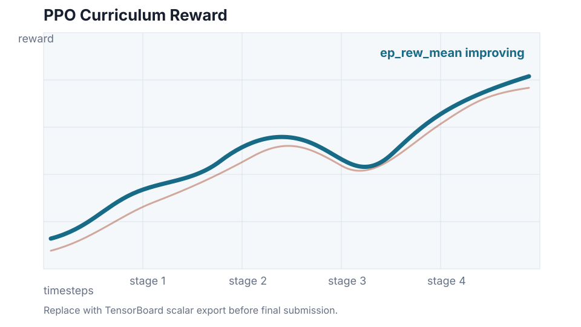
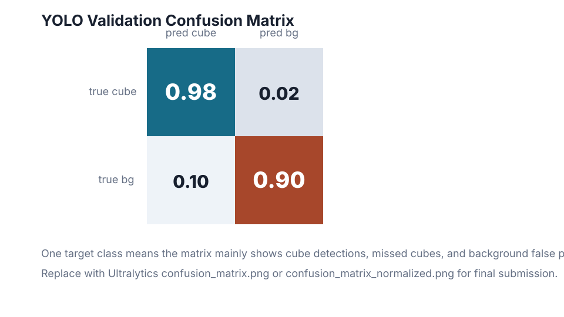

1. Synthetic scene generation
Randomised training scenes are created with variable cube colours, distractor shapes, camera jitter, image noise, dense clutter, and robot-arm occlusion.
41118 AI Robotics Project
A simulated Panda robot arm detects cube-shaped target objects in a cluttered tabletop scene, chooses an order for sorting, and moves every cube into a target zone while ignoring distractors.
Project Overview
The project evolved from a simple colour-based pick-and-place demo into a deeper AI robotics system. The final task is object-centric: identify cubes in clutter, ignore non-cube distractors, handle camera occlusion from the robot arm, and complete a full sorting sequence in one run.
The perception model is a pretrained YOLO detector fine-tuned on synthetic PyBullet images. The high-level sorting policy uses PPO reinforcement learning with curriculum stages, while PyBullet inverse kinematics controls the low-level arm motion.
System Architecture
Randomised training scenes are created with variable cube colours, distractor shapes, camera jitter, image noise, dense clutter, and robot-arm occlusion.
A pretrained YOLO CNN detector is fine-tuned to detect the class cube regardless of colour, rather than relying on classical HSV segmentation.
A PPO agent receives detected object features and learns which cube to sort next through a staged curriculum.
The Panda arm parks before perception, re-observes the scene, selects source-area cubes, and executes smooth pick-and-place trajectories into the sorting zone.
Evaluation

assets/tensorboard_reward.svg or update this image with the final export.
assets/yolo_confusion_matrix.svg or update this image with the final export.Implementation
python 06_generate_yolo_dataset.py --samples 1200 --val-samples 240
python 07_train_yolo.py --model models/yolo_cube.pt --epochs 40
python 08_train_rl_sorting_policy.py
python 09_evaluate_system.py --scenes 50 --save-images
python 05_pick_and_place.pyFinal Demonstration
Add the final edited project video at assets/final_demo.mp4. Nicholas Camilo and Volkan Yildirim recorded the demonstration footage used for the final video.
Team
Lead implementation contributor. Developed the YOLO perception pipeline, synthetic dataset generation, PPO curriculum training workflow, evaluation scripts, and robot sorting integration.
Demo and validation contributor. Supported final run recording, observed arm behaviour during tests, helped identify motion and placement issues, and contributed to project presentation assets.
Demo and testing contributor. Supported final video capture, assisted with scenario validation, helped document the cluttered sorting story, and contributed to final portfolio material.